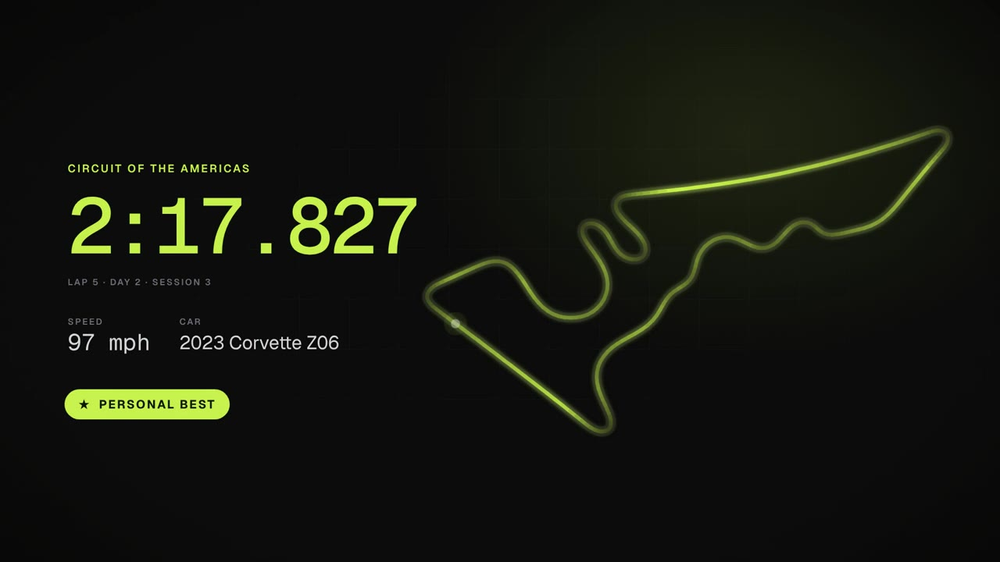

Your track days, remembered lap by lap.
An HPDE and track-day logbook: every event, session and lap time, with charts that show you getting faster. The logbook is free, and your data stays yours.
In any browser, on the App Store for iPhone, iPad and Apple silicon Macs, and on Google Play for Android.

Built around how track days work
Tracks hold events, events hold sessions, sessions hold laps: the same shape as your weekend.
Progress charts & lap stats Free
Your best lap at every track and layout, charted over time. Each session gets consistency over your clean laps, best-lap averages, pace trend and warm-up.
Telemetry import Free
Drop in a video or data file and get sessions with lap times, the racing line and a speed graph for every lap, plus throttle and brake where the file has them. Files are read on your own device; nothing is uploaded unless you save a lap video with Pro. Supported sources.
Telemetry analysis Pro
Everything else the file recorded: steering, RPM, G and yaw traces, shift points, car temperatures and pressures, ABS and wheelspin marks on the track map, sector splits with a theoretical best, and a delta chart between any two laps. See the analysis.
Lap video Pro
Keep each session's best lap, or every lap of a PDR session, as a video clip. It plays in step with the charts, and two laps play side by side.
Record laps in the app Pro
The iPhone and Android apps time your laps from the phone's GPS. Start recording, stow the phone, and pick the start/finish line back in the paddock. Mounted in view, it shows live lap times and a delta to your session best.
Your garage Free
A page for every car you track: its modifications, its track days and its best lap at each track. Your default car fills in new events.
Wear tracking & setup notebook Pro
Pads, tires and fluid tracked per car, with wear projected from your track time: "front pads: about two days left". A setup sheet for each event day, compared against your lap times, with cold tire pressures suggested from the hots you ran.
Share links & leaderboards Free
Publish a read-only page of your stats and best times, or send one event, session or lap as a link that opens without an account. Your notes, email and garage stay private. Opt in to per-track leaderboards, where only GPS- or telemetry-timed laps rank.
Share with a coach Pro
Give an instructor read-only access to your whole logbook, with a driver profile of your experience, gear and goals. Never your notes or costs, and you can revoke it any time. How it works.
Season Wrapped Free
Every November, your season as a story: track days, laps, track miles, the time you found and your fastest lap, ending on a card made for the group chat.
Ask your AI assistant Pro
Connect Claude, ChatGPT or another assistant and ask where the time went, what changed since last season, or when the pads are due. It reads what the app shows and can't change anything. How to connect, or find it in the Claude directory. On the web, the AI Coach debriefs a session beside its charts, on your own Anthropic or OpenAI account.
Works like an app Free
On the App Store for iPhone, iPad and Apple silicon Macs, on Google Play for Android, or in any browser. Your logbook works offline in the paddock, and what you log without signal syncs when you're back online.
From memory card to logbook
Recorders that time laps import with their own lap times. For a GPS-only recording, click the start/finish line on the map you drove and every pass is timed. One line covers the whole batch of files.
Corvette PDR video
Lap times from the recorder's own telemetry, validated against Cosworth Toolbox, with the GPS trace and car channels. Recordings without lap beacons are still timed.
Cadillac PDR video
The V-Series Blackwing's recorder times laps itself, so clips arrive with the car's own lap times, GPS trace and car channels. No line to pick.
GoPro video
The GPS trace from a Hero 5 or newer, timed with the start/finish line picker.
AiM SmartyCam video
The lap times your AiM logger timed, with the GPS trace, RPM, throttle and gear. No line to pick.
Racelogic VBO
VBOX files and RaceChrono, TrackAddict, Harry's LapTimer and Porsche Track Precision exports. Laps come from the file's own start line, or from GPS.
Porsche Track Precision CSV
The lap times Track Precision timed, with RPM, pedals, steering, G, gear and tire pressures. No line to pick.
Free is the logbook. Pro is the analysis.
Everything you log is free, with no limit and no expiry, including lap times from your own video. Pro adds the tools that explain them.
Free
$0
- Unlimited tracks, events, sessions and lap times
- Telemetry import: lap times, the racing line, top speed, and a speed graph for every lap, with throttle and brake where the file has them
- Progress charts, consistency and per-session stats
- Your garage: every car and its best lap at each track
- What each event cost
- Prep checklists, share links and per-track leaderboards
- Season Wrapped
- Offline on the web, iPhone and Android
Pro
$1.99/month or $19.99/year
- Everything in Free
- Lap recording from the phone's GPS, with live timing and a delta
- Every channel in an imported file: steering, RPM, G, yaw, gears and shift points, car health, ABS and wheelspin marks
- Sector splits, theoretical best and lap-vs-lap deltas
- Lap video clips, played in step with the charts (50 GB)
- Consumable wear projections and cost per hour
- The setup notebook, with suggested cold tire pressures
- Costs rolled up per track and per car, and year in review
- Season Wrapped's favorite-tire and top-speed cards
- An AI assistant connected to your logbook, and the AI Coach on the web
- Read-only logbook sharing with a coach
One subscription covers the web app, the iPhone app (iPad and Apple silicon Macs too) and the Android app. Subscribe in Settings on the web, or in the iPhone or Android app, and cancel any time where you bought it.
If Pro lapses you keep everything you logged and can keep adding to it. Bought the app when it was a paid download? Pro is yours for life.
Questions drivers ask
What is Track Evolution?
Track Evolution is a logbook for HPDE and track-day drivers. It keeps every track, event, session and lap time, charts your best laps at each track over time, reads lap times and telemetry from your own video and data files, and tracks the cars you drive. It runs in any browser at trackevolution.app and as an app for iPhone, iPad, Apple silicon Macs and Android.
Is Track Evolution free?
Yes. The logbook is free with no limit and no expiry: tracks, events, sessions, lap times, progress charts, telemetry import, share links and leaderboards. Track Evolution Pro costs $1.99 a month or $19.99 a year and adds GPS lap recording, the full telemetry analysis, wear tracking, the setup notebook, lap video clips, coach sharing and the AI assistant connection.
Can I time my laps with just a phone?
Yes, with Pro. The iPhone and Android apps time laps from the phone's GPS: start recording, stow the phone, and pick the start/finish line on the track map afterwards. With the phone mounted in view you also get live lap times and a delta. How lap recording works.
Which data loggers and cameras can it import?
Corvette Performance Data Recorder (PDR) video, Cadillac V-Series Blackwing PDR video, GoPro footage with GPS (Hero 5 and newer), AiM SmartyCam video, Racelogic VBO files, including VBOX, RaceChrono, TrackAddict and Harry's LapTimer exports, and Porsche Track Precision VBO and CSV exports. Import is free on the web and in both phone apps. See every supported source.
How do I get lap times out of a Corvette PDR video?
Drop the PDR's MP4 file into an event. Lap times, the racing line, top speed, max RPM and max lateral G are read from the telemetry inside the video. A recording with no lap beacons is timed once you pick the start/finish line on its map. Corvette PDR lap times, step by step.
Is my video uploaded when I import it?
No. Video and data files are read on your own device, in the browser or the phone app, and never uploaded. The one exception is your choice: with Pro you can save a short video clip of a lap.
Does it work offline at the track?
Yes. Your whole logbook works offline on the web, iPhone and Android, and what you add without signal syncs when you are back online.
Can ChatGPT or Claude analyze my lap data?
Yes, with Pro. Connect Claude, ChatGPT or another AI assistant to your logbook and ask where the time went against your best lap, what changed since last season or when the brake pads are due. The assistant reads what the app shows and cannot change anything. The web app also has an AI Coach, which debriefs a session or explains the gap between two laps on your own Anthropic or OpenAI account. How to connect an assistant.
What is an HPDE?
HPDE stands for High Performance Driver Education: a track day where you drive your own car on a circuit in run groups sorted by experience, usually with an instructor when you are new. It is not racing: there are no results and no wheel-to-wheel driving. Your first track day covers what you need and where to find an event.
What happens to my data if I cancel Pro?
Nothing you logged is lost. Your events, sessions and lap times stay, you can keep adding more for free, and the Pro features come back if you resubscribe.
Start your logbook in minutes
Never driven on track? Read your first track day first.
Sign in
Use your Google or Apple account at trackevolution.app or in the app. Your logbook is ready.
Log an event
Pick the track and layout, then add sessions and lap times, or only the day's best.
Import telemetry
Drop in a video or data file and sessions with laps appear. On your phone, pick it from Files or Photos.
Watch the trend
Your best laps chart downward as you get faster.